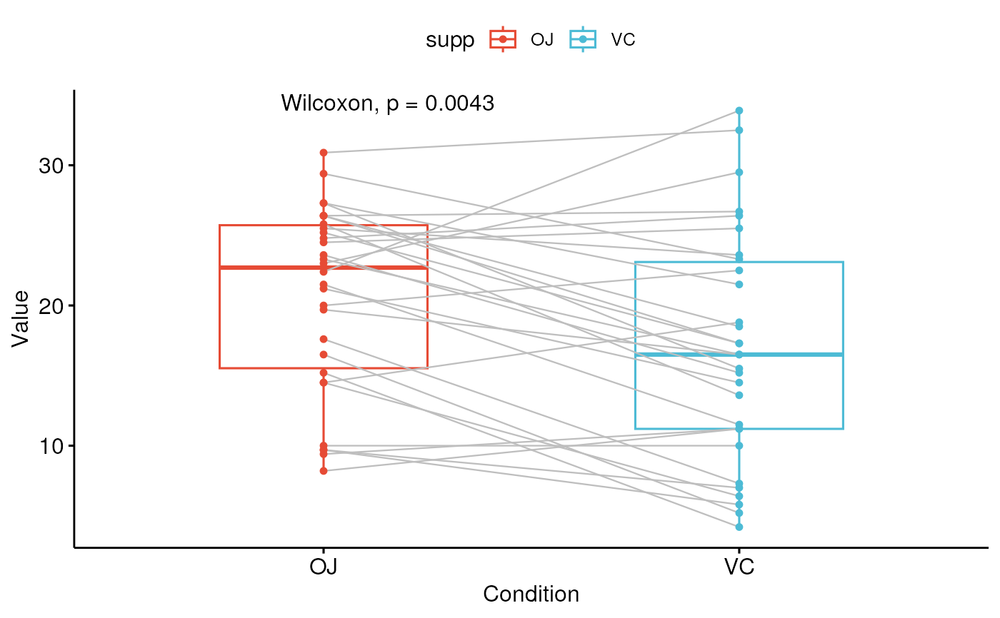
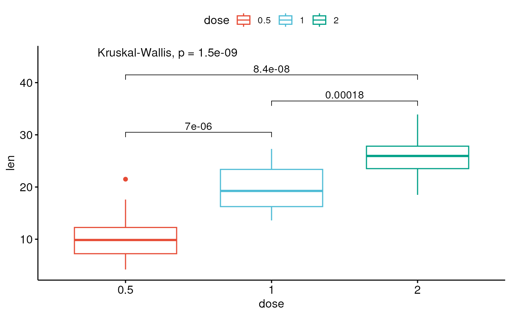
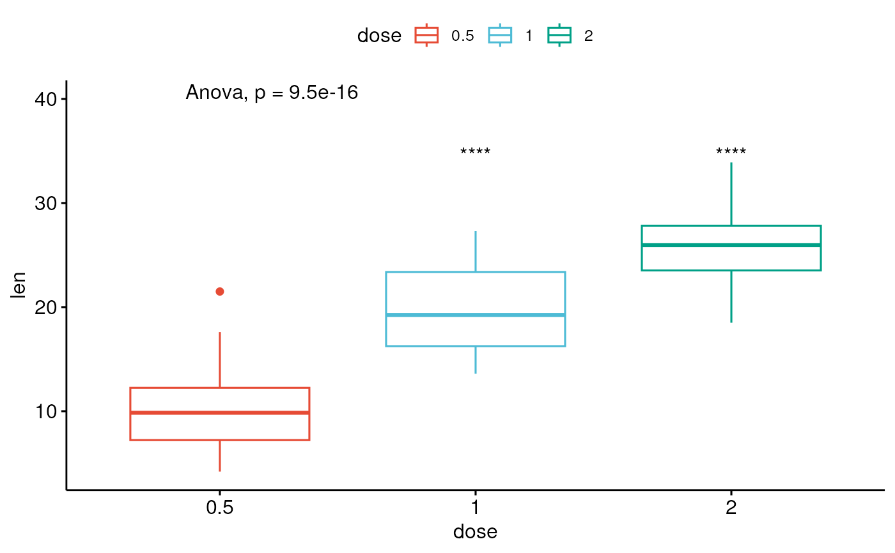
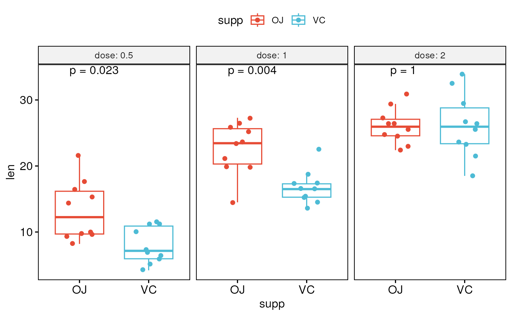

Add mean comparison p-values to a ggplot, such as box blots, dot plots and stripcharts.
stat_compare_means( mapping = NULL, data = NULL, method = NULL, paired = FALSE, method.args = list(), ref.group = NULL, comparisons = NULL, hide.ns = FALSE, label.sep = ", ", label = NULL, label.x.npc = "left", label.y.npc = "top", label.x = NULL, label.y = NULL, vjust = 0, tip.length = 0.03, bracket.size = 0.3, step.increase = 0, symnum.args = list(), geom = "text", position = "identity", na.rm = FALSE, show.legend = NA, inherit.aes = TRUE, ... )
Arguments
| mapping | Set of aesthetic mappings created by |
|---|---|
| data | The data to be displayed in this layer. There are three options: If A A |
| method | a character string indicating which method to be used for comparing means. |
| paired | a logical indicating whether you want a paired test. Used only
in |
| method.args | a list of additional arguments used for the test method.
For example one might use |
| ref.group | a character string specifying the reference group. If specified, for a given grouping variable, each of the group levels will be compared to the reference group (i.e. control group).
|
| comparisons | A list of length-2 vectors. The entries in the vector are either the names of 2 values on the x-axis or the 2 integers that correspond to the index of the groups of interest, to be compared. |
| hide.ns | logical value. If TRUE, hide ns symbol when displaying significance levels. |
| label.sep | a character string to separate the terms. Default is ", ", to separate the correlation coefficient and the p.value. |
| label | character string specifying label type. Allowed values include "p.signif" (shows the significance levels), "p.format" (shows the formatted p value). |
| label.x.npc, label.y.npc | can be
|
| label.x, label.y |
|
| vjust | move the text up or down relative to the bracket. |
| tip.length | numeric vector with the fraction of total height that the bar goes down to indicate the precise column. Default is 0.03. Can be of same length as the number of comparisons to adjust specifically the tip lenth of each comparison. For example tip.length = c(0.01, 0.03). If too short they will be recycled. |
| bracket.size | Width of the lines of the bracket. |
| step.increase | numeric vector with the increase in fraction of total height for every additional comparison to minimize overlap. |
| symnum.args | a list of arguments to pass to the function
In other words, we use the following convention for symbols indicating statistical significance:
|
| geom | The geometric object to use display the data |
| position | Position adjustment, either as a string, or the result of a call to a position adjustment function. |
| na.rm | If FALSE (the default), removes missing values with a warning. If TRUE silently removes missing values. |
| show.legend | logical. Should this layer be included in the legends?
|
| inherit.aes | If |
| ... | other arguments to pass to |
See also
Examples
#> len supp dose #> 1 4.2 VC 0.5 #> 2 11.5 VC 0.5 #> 3 7.3 VC 0.5 #> 4 5.8 VC 0.5 #> 5 6.4 VC 0.5 #> 6 10.0 VC 0.5# Two independent groups #::::::::::::::::::::::::::::::::::::::::::::::::: p <- ggboxplot(ToothGrowth, x = "supp", y = "len", color = "supp", palette = "npg", add = "jitter") # Add p-value p + stat_compare_means()# Change method p + stat_compare_means(method = "t.test")# Paired samples #::::::::::::::::::::::::::::::::::::::::::::::::: ggpaired(ToothGrowth, x = "supp", y = "len", color = "supp", line.color = "gray", line.size = 0.4, palette = "npg")+ stat_compare_means(paired = TRUE)# More than two groups #::::::::::::::::::::::::::::::::::::::::::::::::: # Pairwise comparisons: Specify the comparisons you want my_comparisons <- list( c("0.5", "1"), c("1", "2"), c("0.5", "2") ) ggboxplot(ToothGrowth, x = "dose", y = "len", color = "dose", palette = "npg")+ # Add pairwise comparisons p-value stat_compare_means(comparisons = my_comparisons, label.y = c(29, 35, 40))+ stat_compare_means(label.y = 45) # Add global Anova p-value#> Warning: cannot compute exact p-value with ties#> Warning: cannot compute exact p-value with ties#> Warning: cannot compute exact p-value with ties# Multiple pairwise test against a reference group ggboxplot(ToothGrowth, x = "dose", y = "len", color = "dose", palette = "npg")+ stat_compare_means(method = "anova", label.y = 40)+ # Add global p-value stat_compare_means(aes(label = ..p.signif..), method = "t.test", ref.group = "0.5")# Multiple grouping variables #::::::::::::::::::::::::::::::::::::::::::::::::: # Box plot facetted by "dose" p <- ggboxplot(ToothGrowth, x = "supp", y = "len", color = "supp", palette = "npg", add = "jitter", facet.by = "dose", short.panel.labs = FALSE) # Use only p.format as label. Remove method name. p + stat_compare_means( aes(label = paste0("p = ", ..p.format..)) )